I was tasked with understanding the complexities of the art market and design the system for managing art collections for company who wanted to revolutionise the creative industry.
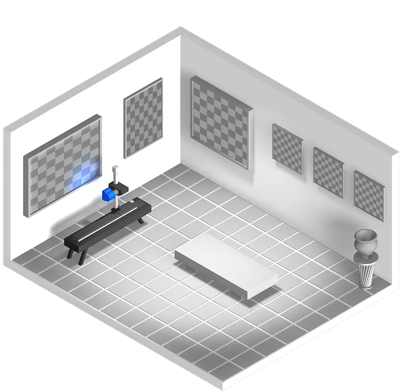
SaaS for artwork management and licensing that ensures security, prevents fraud, and connects participants for future sale of an art piece, with the possibility to scan artwork with a scanner based on fingerprinting technology developed with HP Inc. Underneath, there was an option to generate a certificate or title and authenticity based on NFT technology. I have spent over one year on this project as the only designer and actively worked closely with the client, project manager, QA, and development team.
UX/UI Audit User Reasearch Competitor analysis
Persona development Business Goals Timeline
User Flow Wireframing Prototyping
User Testing Edge Cases Brainstorming
This project was lend to me by company where i worked for more than 5 years. (4soft) This was the most significant project I worked on at the company, showcasing my ability to manage a complex design process independently. I had the opportunity to shape the product's user experience and visual identity.
SaaS for artwork management and licensing that ensures security, prevents fraud, and connects participants for future sale of an art piece, with the possibility to scan artwork with a scanner based on fingerprinting technology developed with HP Inc. Underneath, there was an option to generate a certificate or title and authenticity based on NFT technology. I have spent over one year on this project as the only designer and actively worked closely with the client, project manager, QA, and development team.
UX/UI Audit User Research Competitor analysis
The project started in a rather unconventional way. The client's business model for selling their software was based on presentations of a scanner using HP technology. Therefore, the first functionality we needed to be able to present was the creation of certificates of authenticity for a given artwork and a simple listing of artworks with their data. This allowed us to shorten the time-to-money path and served as a proof of concept for the application itself. The client provided us with their wireframes/lo-fi designs, based on which I had to prepare…
The client was aware of the fact that people associated with art galleries tend to be closed off to their own circles. The technology underlying the project is not particularly popular among artists, so the use of blockchain was not highlighted as one of its advantages. Blockchain provided security and assurance that no one at any stage would be able to counterfeit a given piece of art. Additionally, the artist, owner, and buyer could verify that the artwork was not a forgery during the process of creating sales documents.
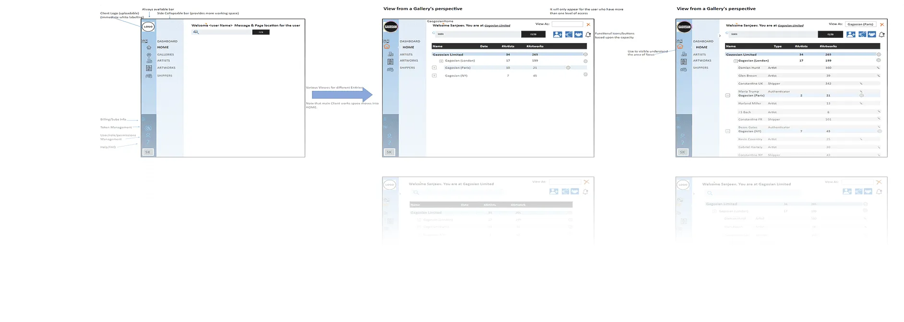
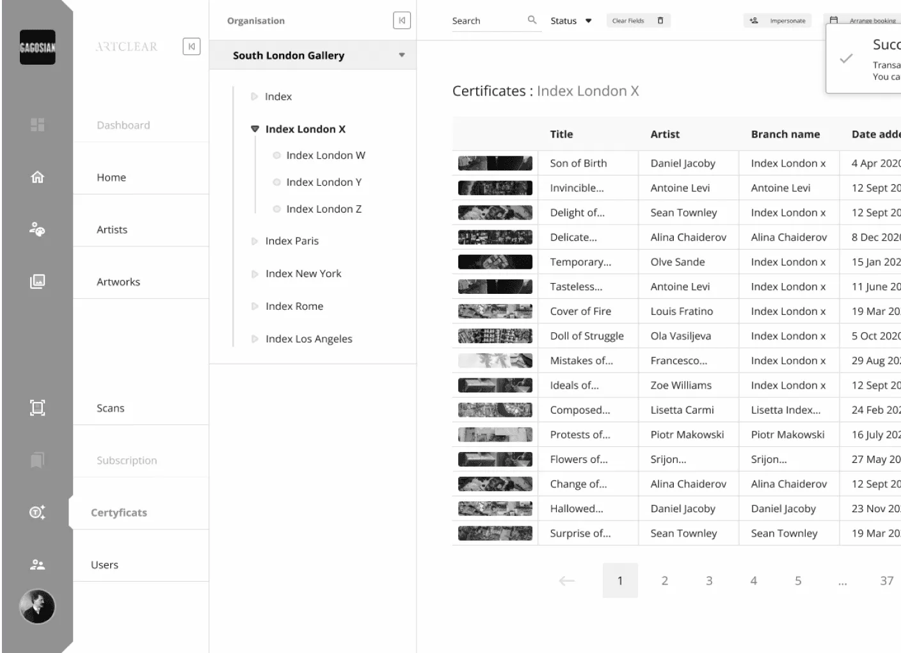
When designing a solution, I must consider the habits of the future user and remember not to reinvent the wheel. An easy way to understand the challenges is by analyzing competitors and their solutions. In this case, the competition was not limited to other companies developing similar products but also included platforms that enable the certification and licensing of specific items.
We created a draft of an MVP with a sitemap of components and features that we planned to develop in the next steps. For client, stages of creation where based on tech demos that client presentet to future investors so we had to make it quick. We decided that we will base part of our design on Material components to simplify process of development in time whitch was crucial.
Persona development Business Goals Timeline
In the project, we were able to define several key personas. One group included art galleries aiming to streamline the already complex mechanisms of art management—from transferring artworks between locations to managing the condition of pieces and ensuring they are not swapped during transport. This type of client was further divided into more specialized personas, ranging from the artist affiliated with a gallery to the staff responsible for management.
Another group included collectors and traders looking to invest their assets in artworks. Documents certifying the value of these pieces, along with the ability to verify authenticity using a scanner, added additional value for this audience.
The final group was composed of independent artists wanting to sell their work without intermediaries. Future plans included the creation of a marketplace for selling both physical art and NFTs.
To develop the product, it was necessary to secure funding and support, as individual clients were not the target audience. The CTO and their team scheduled meetings with art galleries that might be interested in the product presentation. During these discussions, they conducted surveys about the development of existing functionalities, gathered feedback on potential additions, and identified improvements that could be made at the current stage of development.
To develop the product, it was necessary to secure funding and support, as individual clients were not the target audience. The CTO and their team scheduled meetings with art galleries that might be interested in the product presentation. During these discussions, they conducted surveys about the development of existing functionalities, gathered feedback on potential additions, and identified improvements that could be made at the current stage of development.
The production process and sprints were based on the functionalities previously discussed with the prospective client or gallery. These features were designed to support and enhance their management processes. Each functionality underwent its own brainstorming session with the team, where we discussed the best approach for implementing the next features for our app. We considered how these features would work from an architectural perspective and whether the elements of the future design would be easy to implement. We created multiple proposals mostly A/B for problem-solving, which were then presented to the client.
User Flow Wireframing Prototyping
For this project, I developed a design system based on Atomic Design principles and design tokens. Initially, I used Material Design as a foundation to ensure consistency and a smooth implementation.
Atomic Design helped break the design into smaller, reusable components, which made it easier to update and maintain the system over time. This approach also sped up the documentation process. When Figma introduced design variables and tokens, I updated the styles to take advantage of these new features.
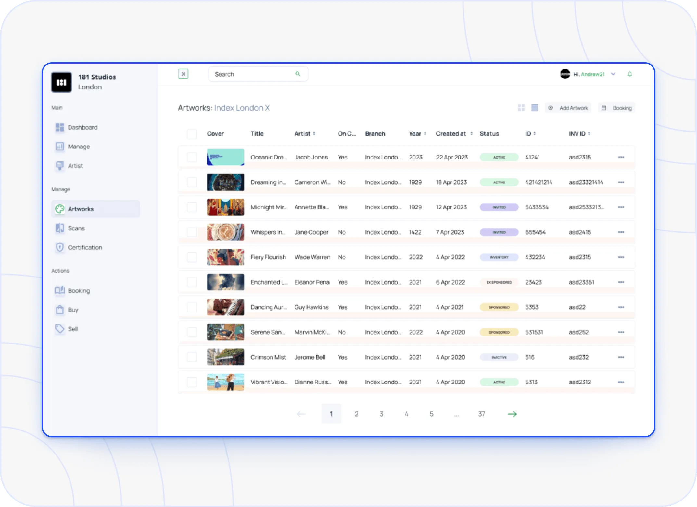
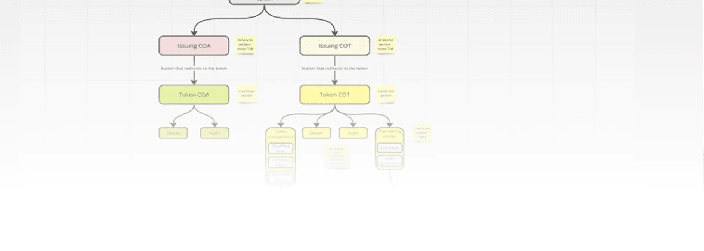
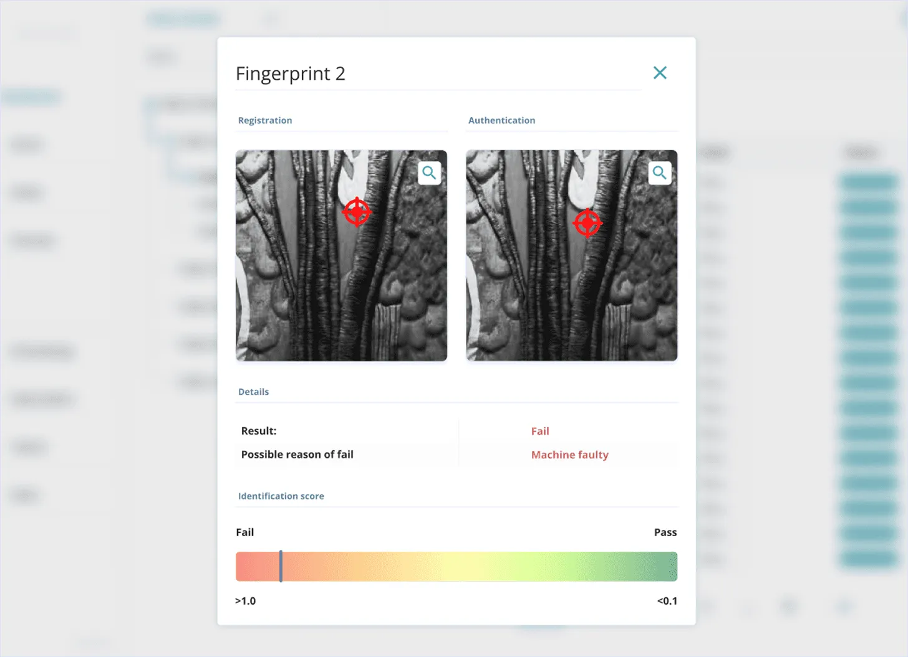
Design starts with rough sketches and simple wireframes, like the hand-drawn notes and basic layouts shown here. These early versions focus on structure and functionality rather than appearance. As the design progresses, it becomes more refined—moving from black-and-white wireframes to interactive prototypes with images, colors, and detailed elements.
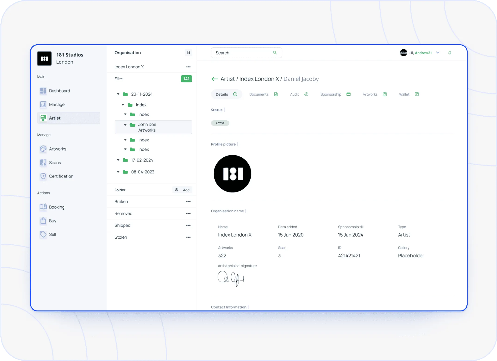
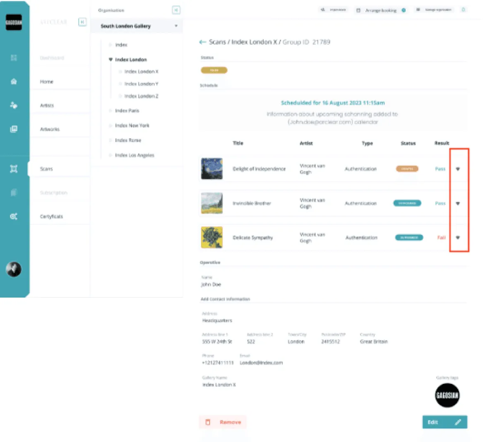
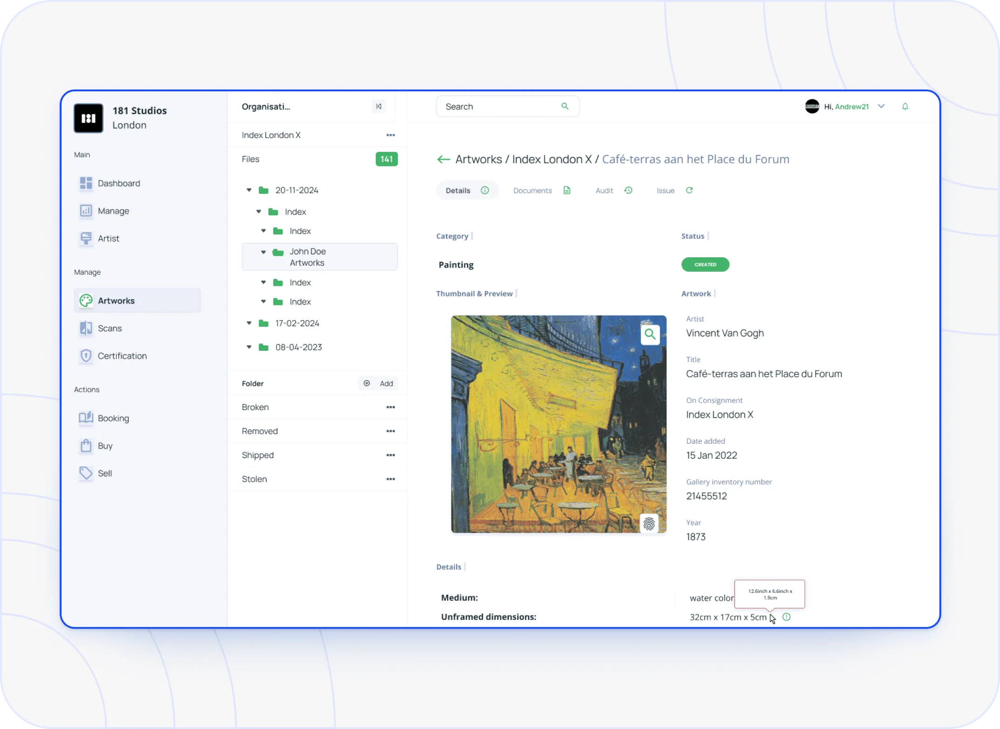
Early versions of a design—whether lo-fi wireframes or initial prototypes—often look incomplete, messy, or even "bad". These rough drafts are not meant to be perfect; they're meant to explore ideas, test assumptions, and uncover problems early.
For this project, I developed a design system based on Atomic Design principles and design tokens. Initially, I used Material Design as a foundation to ensure consistency and a smooth implementation.
Atomic Design helped break the design into smaller, reusable components, which made it easier to update and maintain the system over time. This approach also sped up the documentation process. When Figma introduced design variables and tokens, I updated the styles to take advantage of these new features.
As the designs were passed to the development team, we worked closely together to make sure everything was smoothly implemented. We held regular meetings to discuss any technical challenges and make sure the final product stayed true to the original design ideas. Additionally, we conducted design reviews for each new functionality as it was prepared, ensuring that every feature aligned with the overall user experience and design goals before moving forward.
User Testing Edge Cases Brainstorming
Let me quote St. Augustine of Hippo. "Inter faeces et urinam nascimur." for those who actually will read it. All design directions walked the chaotic journey of design and were morphed into stronger, holistic designs by the end of the journey using Lean UX.
In design reviews, I focused on making sure each feature stayed true to the overall design vision. I provided feedback on visual details, interactions, and usability, working closely with developers to address any issues early and keep everything consistent.
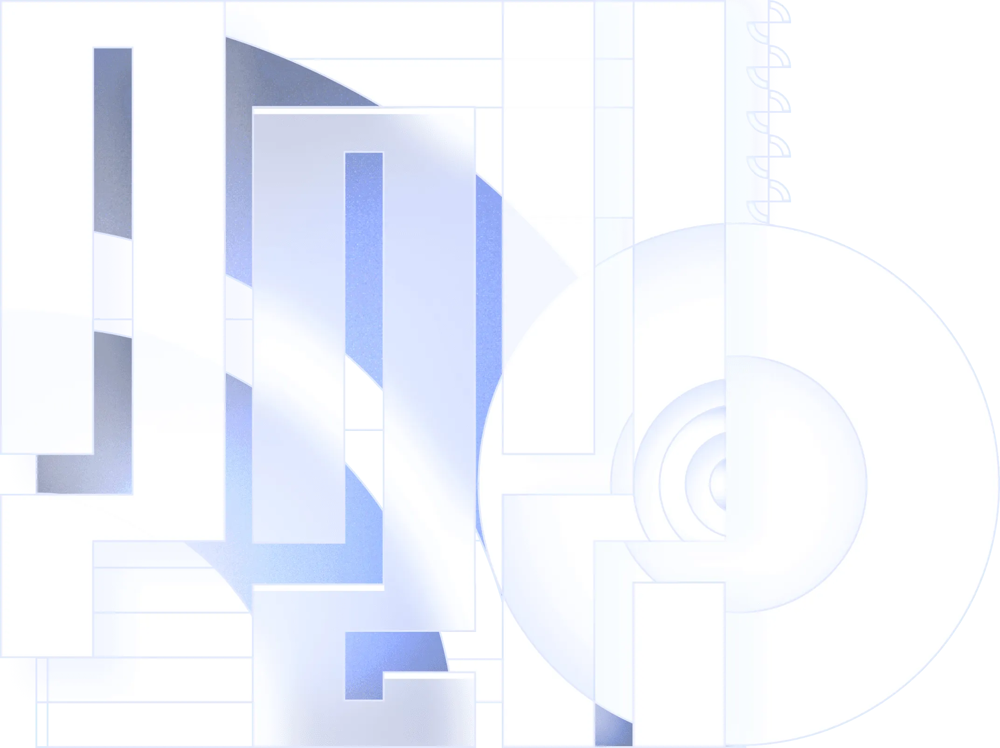
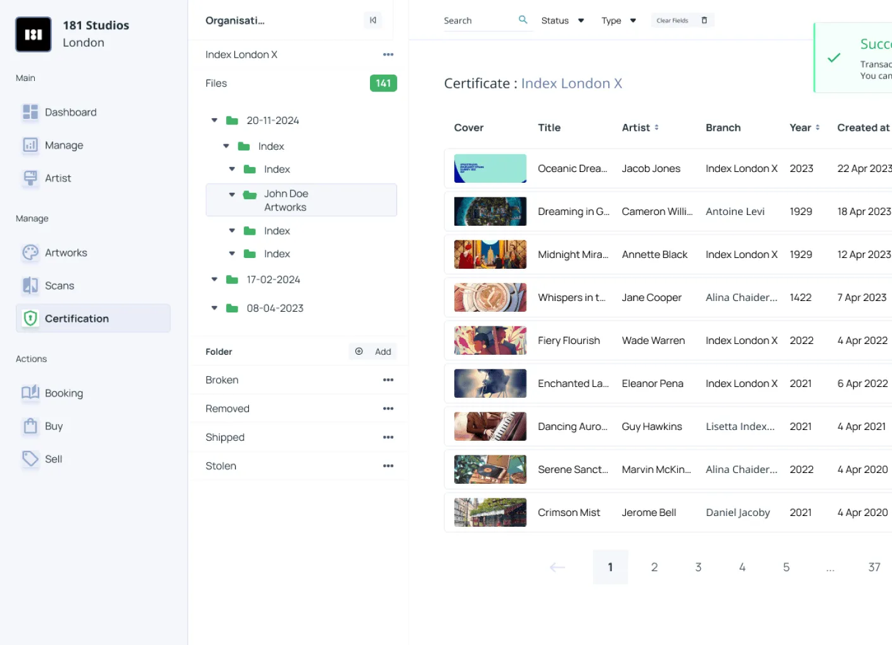
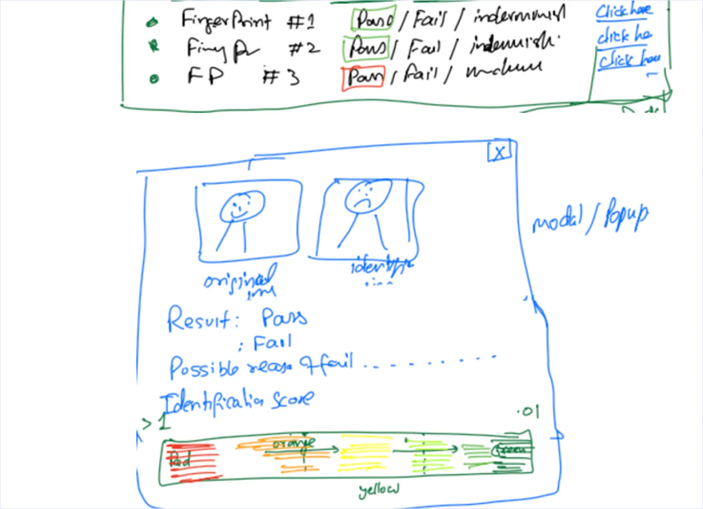
Given the nature of the project, I came across several challenges during the design process, often tied to architectural limitations. For example, when designing the flow for adding new artworks, it wasn't as simple as uploading a single, flat image. An artwork could consist of multiple elements, each with different properties and dimensions. The app had to remember the state of every added element so that if something went wrong, the user could pick up right where they left off.
Since the number and complexity of these elements could vary greatly, I worked closely with the team to analyze potential issues. The main goal was to ensure that users wouldn't have to think about technical limitations and could enjoy a smooth experience with clear progress tracking at every step.
In one of the last stages of the project, I worked on creating a concept for a mobile app that would allow users to sell their artwork in the future. The goal was to design a simple, easy-to-use app where artists could upload and showcase their work, with the option to sell it later.
I focused on making the process smooth and user-friendly, while planning for features like secure payments and inventory management down the line. This concept helped test the idea and lay the groundwork for future development. Ultimately, it aimed to provide a simple and effective way for both artists and buyers to connect.
This project allowed me to explore both the design and potential future features for an artist community. By developing all stages of the app, which enables users to manage and create certificates for collectors and creators, I was able to consider how the app could grow and adapt to meet user needs.
Looking ahead, this project also lays the foundation for exciting future possibilities, such as integrating a broader marketplace, fostering artist communities, and offering personalized user experiences.
I'm excited to see how the design evolves and how this app can empower artists to share and sell their work in a simple, seamless way.